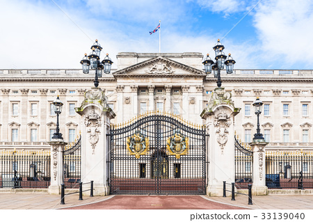

버킹엄 궁전
'버킹엄 궁전'은 1762년 조지 2세가 '버킹엄 공작'의 저택을 구입하면서 왕실 거주지로 사용되기 시작했다.
1837년 빅토리아 여왕이 즉위하고 나서는 영국 국왕이 상주하는 궁전이 되었고, 현재 엘리자베스 여왕도 이곳에서 거주하고 있다.
궁전 내부에는 2만m²의 호수를 포함해 약 17만m²에 이르는 대정원, 그리고 무도회장, 음악당, 미술관, 접견실과 도서관 등이 들어서있다.
버킹엄 궁의 방수는 알현실 19개, 손님용 침실 52개, 스태프용 침실 188개, 사무실 92개, 욕실 78개를 포함하여 총 775개이다.
궁전에 근무하는 사람의 수는 약 450명, 연간 초대객은 4만 명이나 된다고 한다.
왕족들을 보필하는 시종 50명은 같은 궁에 머물며, 기타 다른 시종들은 왕실 마구간인 로열 뮤스(Royal Mews)에 기거한다.
더불어 궁전의 내외 호위를 담당하는 왕실 근위병 교대식은 볼거리로 매우 유명하다.